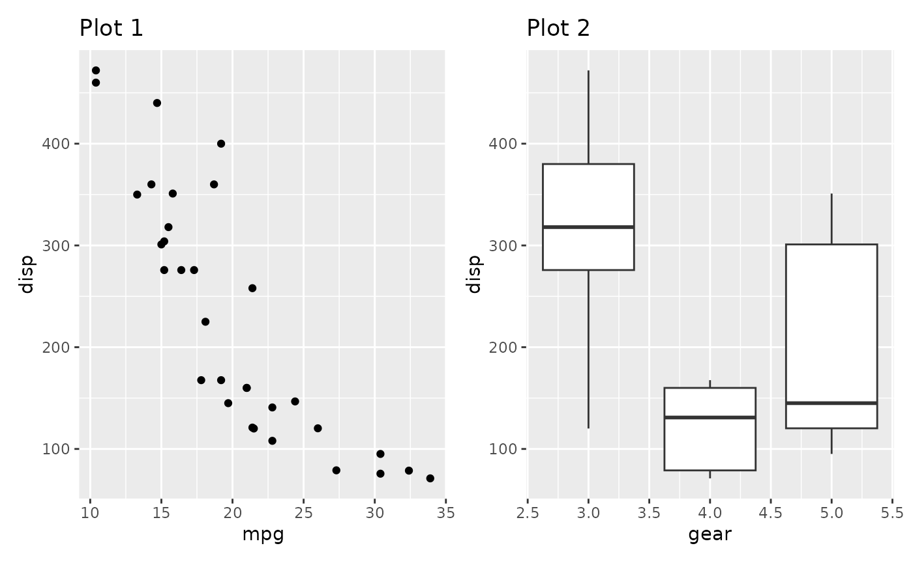
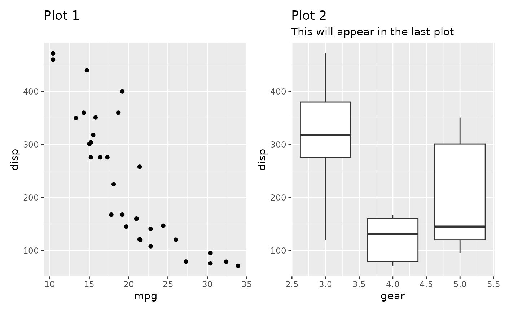
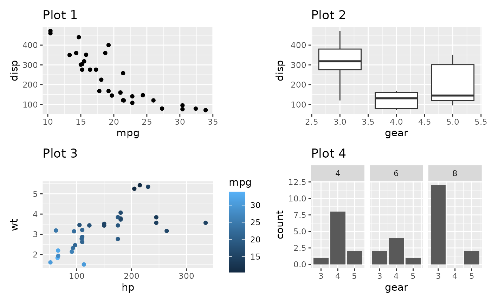
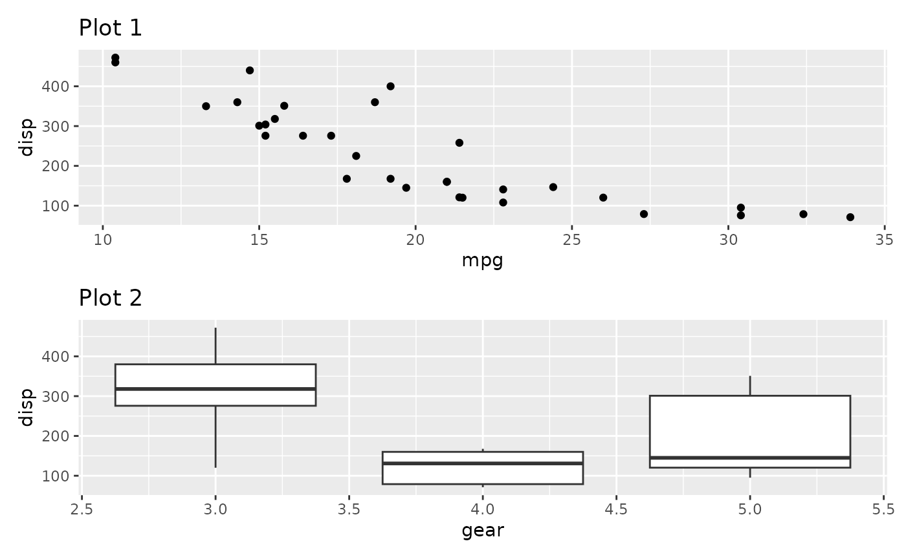
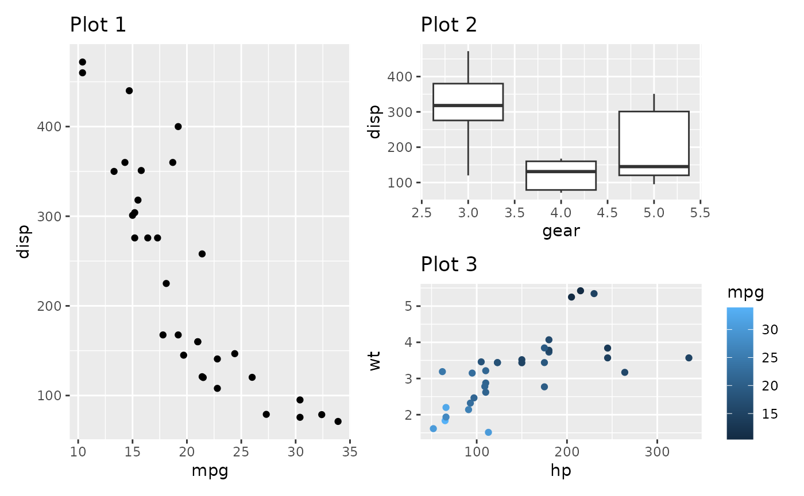

Patchwork is a package designed to make plot composition in R extremely simple and powerful. It is mainly intended for users of ggplot2 and goes to great lengths to make sure ggplots are properly aligned no matter the complexity of your composition.
In this tutorial we’ll work through the basics of using patchwork. In the end you’ll have a fairly good understanding of the API, and will be ready to dive into some of the more advanced topics covered in the other vignettes.
Example plots
We’ll start by creating some example plots to use throughout this tutorial:
library(ggplot2)
p1 <- ggplot(mtcars) +
geom_point(aes(mpg, disp)) +
ggtitle('Plot 1')
p2 <- ggplot(mtcars) +
geom_boxplot(aes(gear, disp, group = gear)) +
ggtitle('Plot 2')
p3 <- ggplot(mtcars) +
geom_point(aes(hp, wt, colour = mpg)) +
ggtitle('Plot 3')
p4 <- ggplot(mtcars) +
geom_bar(aes(gear)) +
facet_wrap(~cyl) +
ggtitle('Plot 4')These plots are fairly meaningless and only serve to illustrate plot composition - don’t read anything into the resulting plots.
Basic use
The absolute simplest use is the extension of the + operator used in ggplot2, to allow adding plots together:

when adding plots together, the last added plot will be the active one, and will receive any addition of new ggplot2 objects such as geoms, labels, etc:

Controlling layout
By default, patchwork will try to keep the grid square, and fill it out in row order

This can be controlled with the addition of a plot_layout()

plot_layout() have all sorts of amazing features for controlling the layout of your composition. See the Layout vignette for a full rundown of all its options.
Stacking and queuing plots
Often you want to place plots on top of each other, or beside each other, rather than fill out a grid. While this can be accomplished by adding a one-row or one-column layout, patchwork also provides two operators that does this directly and further provides visual cues to the layout. | will place the plots beside each other, while / will stack them:

as patchworks can be nested, these two operators are often enough to create rather complex layouts:

Annotating the composition
It is often necessary to add titles, captions, tags, etc. to a composition. This can be achieved by adding a plot_annotation() to the patchwork:

patchwork also provides auto-tagging capabilities, in order to identify subplots in text:

The tagging can be either arabic or roman numbers, or latin letters, and separate tags can be given for different nesting levels. See the Annotation vignette for more information.